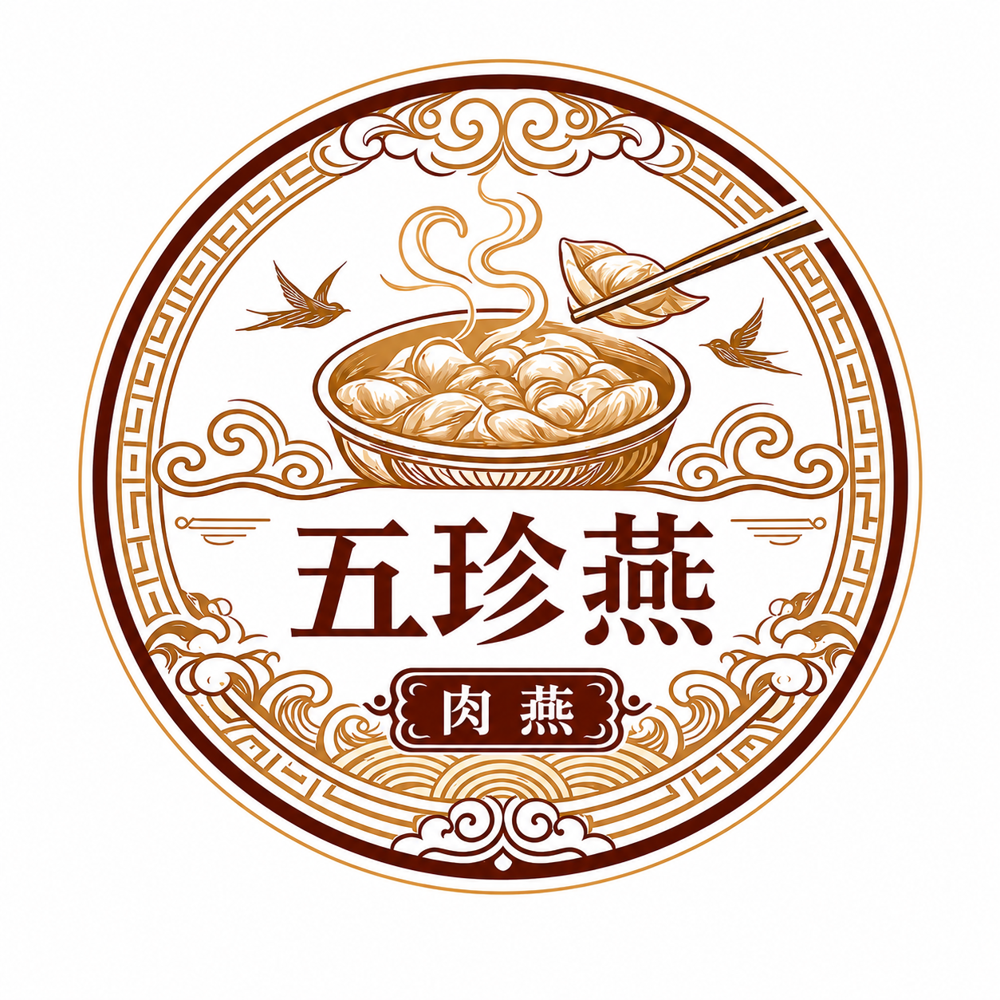
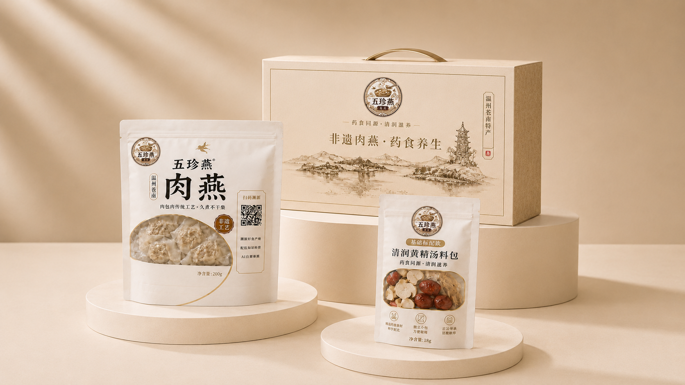
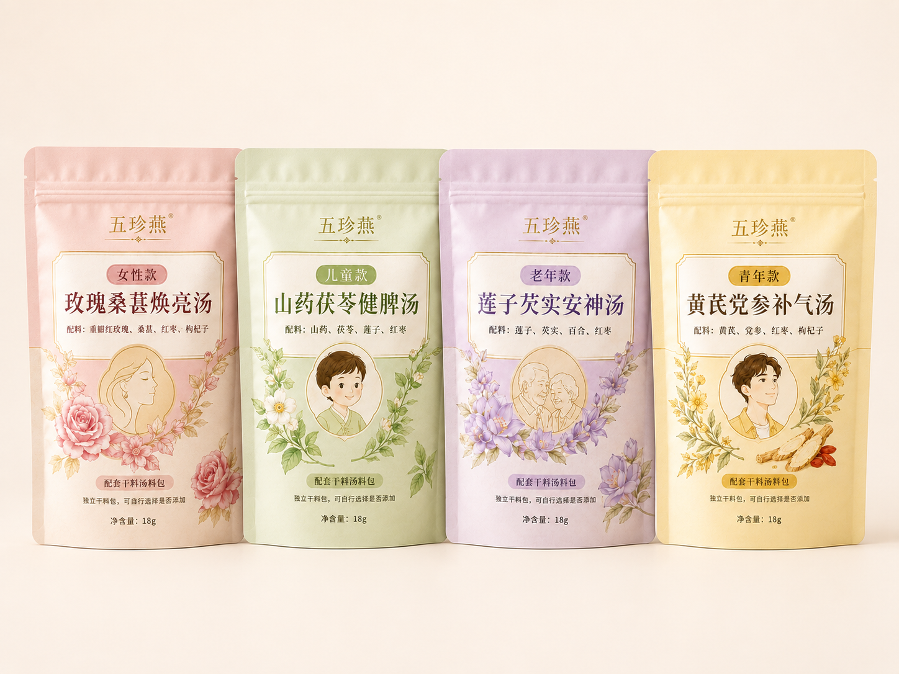
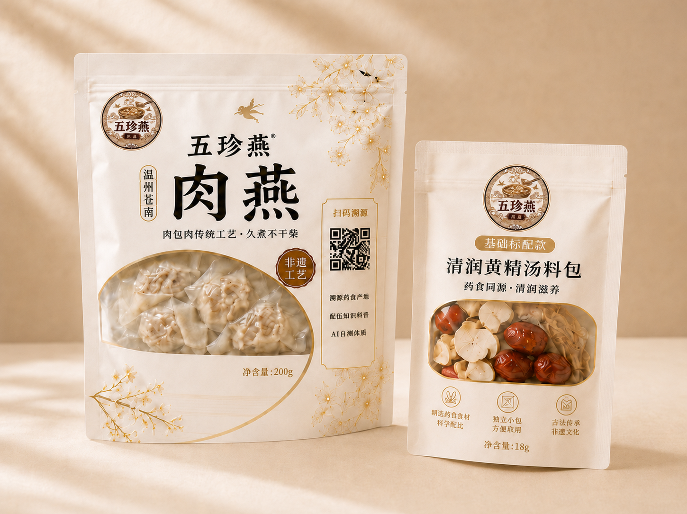

壹 什么是药食同源？
药食同源是指部分食材兼具日常食用价值与传统食养价值，可在合理搭配下融入日常饮食场景。五珍燕以苍南肉燕为基础，结合黄精、山药、枸杞、红枣四味药食同源原料，打造更符合现代轻食养需求的康养肉燕产品。

WUZHENYAN DIGITAL WELLNESS
原料溯源、非遗工艺、
药食科普与自测体质特征

SCAN & DISCOVER

FOOD & WELLNESS

药食同源是指部分食材兼具日常食用价值与传统食养价值，可在合理搭配下融入日常饮食场景。五珍燕以苍南肉燕为基础，结合黄精、山药、枸杞、红枣四味药食同源原料，打造更符合现代轻食养需求的康养肉燕产品。
四味相合 · 温润入膳
常见药食同源原料，适合清润滋养类汤品搭配。
口感温和，适合日常健脾类膳食搭配。
常见滋养类药食原料，与黄精搭配即古方「二精丸」组合。
味甘性温，常用于家常汤品，可为汤品增添自然甘甜。
古方化裁 · 四味协同
国家卫健委发布的《按照传统既是食品又是中药材的物质目录》
山药发挥锁水防柴作用，改善肉质持水性；山药多糖与黄精多糖可延缓猪肉氧化酸败，延长冻藏风味稳定性；枸杞、红枣用于调和风味、提升口感层次，消解草本厚重感。
基于食品科学领域对植物多糖、黏液蛋白抗氧化与持水作用的通用研究结论，为理论层面的作用机制推导。
本配方以北宋官修医籍《圣济总录》所载经典名方「二精丸」为核心骨架，加山药、红枣二味化裁而成，四味珍材协同，组方遵循传统君臣佐使配伍原则：
二精丸首载于《圣济总录・神仙服饵门》，原文记载其功效为「助气固精，保镇丹田，活血驻颜」，原方由黄精、枸杞子二味等量配伍，是历代公认的平补肝肾、气阴同调的经典轻补方剂。
四味性味甘平或甘温，无大寒大热之偏，配伍普适性强，符合药食同源「轻补、缓调」的食养原则，无配伍禁忌。
— 珍材入燕 · 食养新生 —
AI CONSTITUTION TEST
本自测依据国家标准《中医体质分类与判定》编制，通过 26 道题判定平和质与八种偏颇体质的倾向，用于健康科普自测，不替代医疗诊断。
近一年的真实感受
请根据近一年的真实感受作答，每题只选一个分值，逐题作答、请勿漏答。作答进度会暂存在本机浏览器中，中途离开可继续。
TEST RESULT
— 珍材入燕 · 食养新生 —